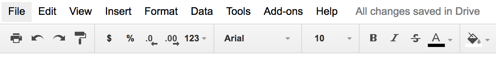
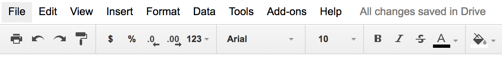
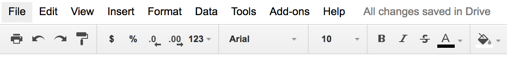

Today's reading is about choosing colors for a user interface. We'll go over some **models** for representing colors, not just the familiar RGB model. And we'll discuss some guidelines for choosing colors. The most important guidelines will be applications of rules we already discussed in visual design: **simplicity** as much as possible, **contrast** where important. A good reference about color is Colin Ware, *Information Visualization: Perception for Design*, Morgan Kaufmann, 2000.
Now let's look at how colors are represented in GUI software. At the lowest level, the RGB model rules. The RGB model is a unit cube, with (0,0,0) corresponding to black, (1, 1, 1) corresponding to white, and the three dimensions measuring levels of red, green, and blue. The RGB model is used directly by CRT and LCD monitors for display, since each pixel in a monitor has separate red, green, and blue components.
The CMYK (cyan, magenta, yellow, and sometimes black) is similar to the RGB model, but used for print colors, where pigments absorb wavelengths instead of generating them. K stands for key.
HSV (hue, saturation value) is a better model for how humans perceive color, and more useful for choosing colors in user interface design. HSV is a cone. We've already encountered hue and value in our discussion of visual variables. Saturation is the degree of color, as opposed to grayness. Colors with zero saturation are shades of gray; colors with 100% saturation are pure colors.
HLS (hue, lightness, saturation) is a symmetrical relative of the HSV model, which is elegant. It basically pulls up the center of the HSV cone to make a double-ended cone.
Many applications have a color picker that lets you pick HSV values as an alternative to RGB.
[Here's a fun website](http://color.method.ac) that helps you test your color matching skills across hue, saturation, and value.
One issue in accurate color reproduction is the intensity (value) of the color. Different display devices have different response curves. When the red component of an RGB value (0-1) is mapped directly to a voltage applied to an electron gun, the intensity of light produced does not vary linearly from 0 to 1, but typically follows a power curve (y=x^gamma, for some gamma > 1). **Gamma correction** is the process of standardizing the intensity so that a linear response is obtained.

 
In general, avoid strongly saturated colors - i.e., the colors around the outside edge of the HSV cone. Saturated colors can cause visual fatigue because the eye must keep refocusing on different wavelengths. They also tend to saturate the viewer's receptors (hence the name). One study found that air traffic controllers who viewed strongly saturated green text on their ATC (air traffic control) interfaces for many hours had trouble seeing pink or red (the other end of the red/green color channel) for up to 15 minutes after their shift was over.
Use less saturated, "pastel" colors instead, which mix gray or white into the pure color.
The examples on top use colors with high saturation; on the bottom, low saturation. Shades of gray have minimum saturation.
In general, colors should be used sparingly. An interface with many colors appears more complex, more cluttered, and more distracting. Use only a small number of different hues.
The toolbar on top uses too many colors (many of them highly saturated), so none of the buttons stand out, and the toolbar feels hard to scan. In contrast, the toolbar at the bottom uses only a handful of colors. It's more restful to look at, and the buttons that actually use color (like the Open File button) really pop out.
A simple and very effective color scheme uses just one hue (like blue or green, weakly saturated and in various values), combined with black, white, and shades of gray. On top of a scheme like that, a bit of red in an icon will pop out wonderfully.

In general, avoid strongly saturated colors - i.e., the colors around the outside edge of the HSV cone. Saturated colors can cause visual fatigue because the eye must keep refocusing on different wavelengths. They also tend to saturate the viewer's receptors (hence the name). One study found that air traffic controllers who viewed strongly saturated green text on their ATC (air traffic control) interfaces for many hours had trouble seeing pink or red (the other end of the red/green color channel) for up to 15 minutes after their shift was over.
Use less saturated, "pastel" colors instead, which mix gray or white into the pure color.
The examples on top use colors with high saturation; on the bottom, low saturation. Shades of gray have minimum saturation.
In general, colors should be used sparingly. An interface with many colors appears more complex, more cluttered, and more distracting. Use only a small number of different hues.
The toolbar on top uses too many colors (many of them highly saturated), so none of the buttons stand out, and the toolbar feels hard to scan. In contrast, the toolbar at the bottom uses only a handful of colors. It's more restful to look at, and the buttons that actually use color (like the Open File button) really pop out.
A simple and very effective color scheme uses just one hue (like blue or green, weakly saturated and in various values), combined with black, white, and shades of gray. On top of a scheme like that, a bit of red in an icon will pop out wonderfully.
 Background colors should establish a good contrast with the foreground. White is a good choice, since it provides the most contrast; but it also produces bright displays, since our computer displays emit light rather than reflecting it. Pale (desaturated) yellow and very light gray are also good background colors. Dark backgrounds are tricky; it's too easy to mess up the contrast and make text less legible, as shown in this example.
Background colors should establish a good contrast with the foreground. White is a good choice, since it provides the most contrast; but it also produces bright displays, since our computer displays emit light rather than reflecting it. Pale (desaturated) yellow and very light gray are also good background colors. Dark backgrounds are tricky; it's too easy to mess up the contrast and make text less legible, as shown in this example.
 Finally, match expectations. One of the problems with the Adaptec dialog on the left is the use of red for OK. Red generally means stop, warning, error, or hot. Green conventionally means go, or OK. Yellow means caution, or slow. (But note that these conventional meanings for colors are culturally dependent, and what works in one culture may not work for users in other cultures.)
Given all these rules about what colors not to choose, what colors should you choose? There are no hard-and-fast rules here, but there are a few heuristics. The first heuristic is an old standby - use color schemes that seem to work well for other interfaces on the desktop or the web. There are several tools you can use to probe your web browser (Firebug for Firefox) or desktop screen (EclipsePalette for Windows, Digital Color Meter for Mac) to determine what color is being used by a particular display element.
Another effective heuristic is to find a photograph of a natural scene that looks appealing to you, and extract colors from it (using the same tools, or using the eyedropper tool in a paint program). The intuitive basis for this heuristic is that our visual systems evolved to easily perceive and appreciate the natural world.
Keep your choices simple. You can't go far wrong by choosing one weakly saturated color and a few shades of gray. As soon as you choose two colors, however, you run the risks of an aesthetic clash between them; it's good to get some other opinions on your choice, particularly if you might be somewhat colorblind yourself.
There are also some sites out there that help you choose colors. [ColourLovers](http://www.colourlovers.com/) and [Adobe Color CC](https://color.adobe.com/) are large collections of user-contributed color schemes, with ratings and votes. The [NASA Color Tool](http://colorusage.arc.nasa.gov/ColorTool.php) helps select a palette of colors using HLS and view them side-by-side on sample data.
Finally, match expectations. One of the problems with the Adaptec dialog on the left is the use of red for OK. Red generally means stop, warning, error, or hot. Green conventionally means go, or OK. Yellow means caution, or slow. (But note that these conventional meanings for colors are culturally dependent, and what works in one culture may not work for users in other cultures.)
Given all these rules about what colors not to choose, what colors should you choose? There are no hard-and-fast rules here, but there are a few heuristics. The first heuristic is an old standby - use color schemes that seem to work well for other interfaces on the desktop or the web. There are several tools you can use to probe your web browser (Firebug for Firefox) or desktop screen (EclipsePalette for Windows, Digital Color Meter for Mac) to determine what color is being used by a particular display element.
Another effective heuristic is to find a photograph of a natural scene that looks appealing to you, and extract colors from it (using the same tools, or using the eyedropper tool in a paint program). The intuitive basis for this heuristic is that our visual systems evolved to easily perceive and appreciate the natural world.
Keep your choices simple. You can't go far wrong by choosing one weakly saturated color and a few shades of gray. As soon as you choose two colors, however, you run the risks of an aesthetic clash between them; it's good to get some other opinions on your choice, particularly if you might be somewhat colorblind yourself.
There are also some sites out there that help you choose colors. [ColourLovers](http://www.colourlovers.com/) and [Adobe Color CC](https://color.adobe.com/) are large collections of user-contributed color schemes, with ratings and votes. The [NASA Color Tool](http://colorusage.arc.nasa.gov/ColorTool.php) helps select a palette of colors using HLS and view them side-by-side on sample data.
Color Models
Color Models
- Red-Green-Blue (RGB)
- Red: 0% - 100%
- Green: 0% - 100%
- Blue: 0% - 100%

- Cyan-Magenta-Yellow (CMYK)
- Used for printing

More Color Models
- Hue-Saturation-Value (HSV)
- Hue is wavelength of color
- Saturation is amount of pure color
- 0% = gray, 100% = pure
- Value is brightness
- 0% = dark, 100% = bright
- Hue-Lightness-Saturation (HLS)
- White has lightness 1.0
- Pure colors have lightness 0.5

Design Guidelines
Avoid Saturated Colors

Background Colors
Be Consistent with Expectations
Answer this question: [Color](https://docs.google.com/forms/d/e/1FAIpQLSdgJVvyzdzrlGh-510CWJagAceLQ37FXDYYbq8wxWPBAmDWAg/viewform?usp=sf_link)
Today's reading has two parts. Go to the next reading: [Typography](../18-Typography/)